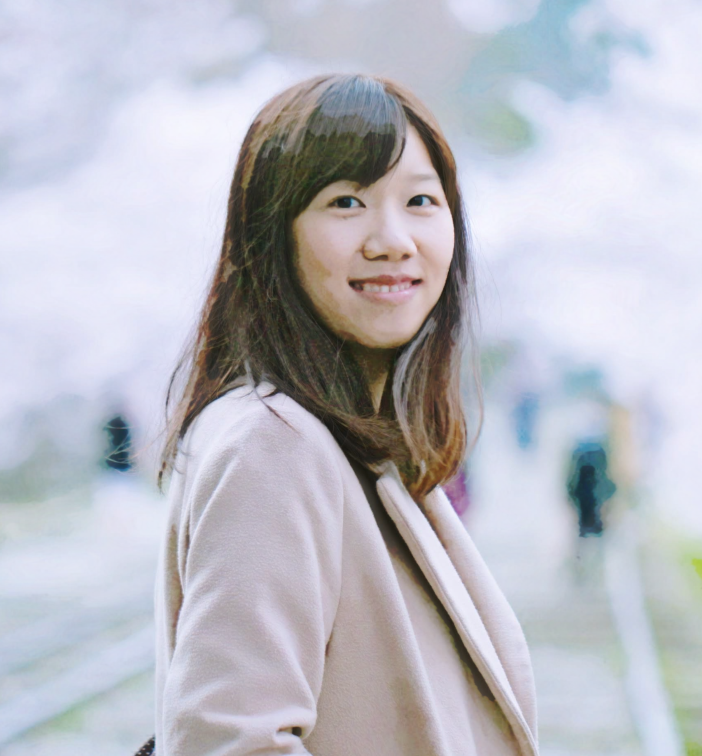

|  |
Hello! I am a Ph.D. student at Computer Vision Lab at Kyoto University under the supervision of Prof. Shohei Nobuhara and Prof. Ko Nishino. My research interests include: computer vision, 3D capture in water, computational photography, structure-from-motion, projector-camera systems, multiple view geometry, and (self-)calibration. Email: jennifer (at) vision.ist.i.kyoto-u.ac.jp |
|
Non-Rigid Shape from Water |
|
Appearance and Shape from Water Reflection |
|
Surface Normals and Shape from Water |